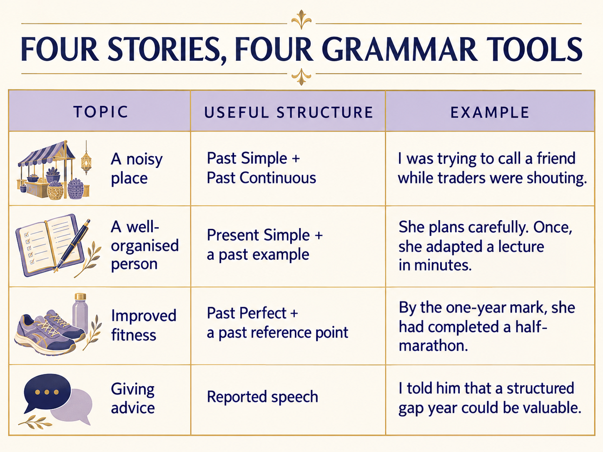
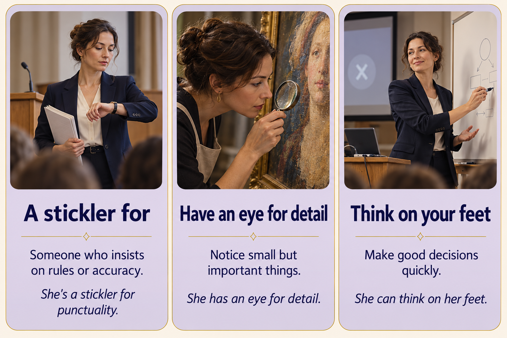
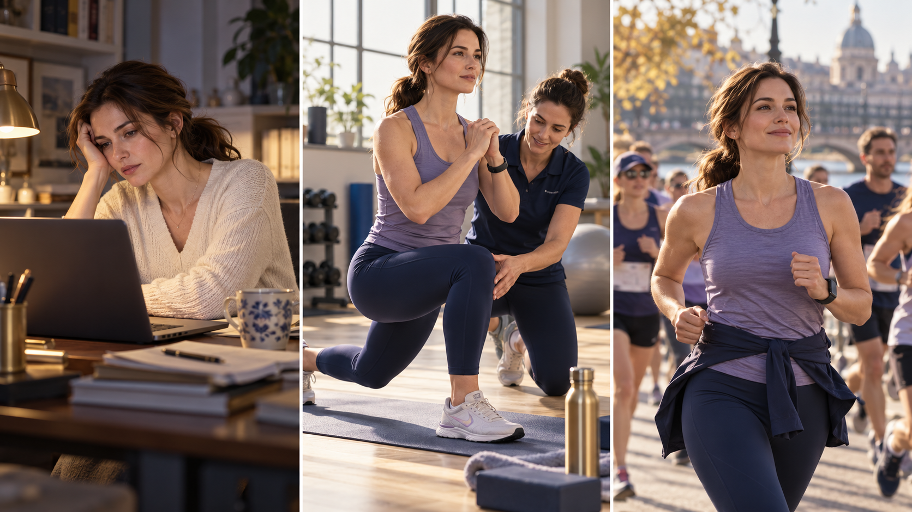
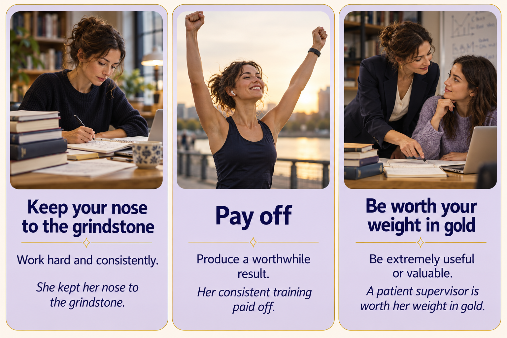
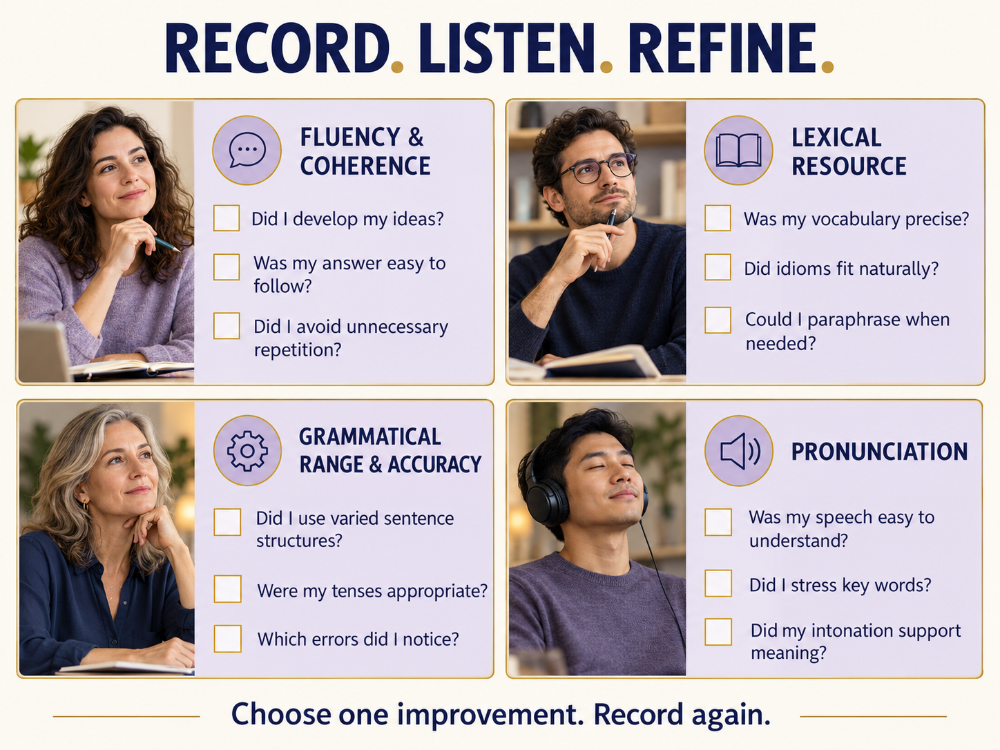

Собрано на свежих сливах октября 2026 (reported 23.10) · 10 новых идиом Band 8-9 поверх прошлого Idiom Pack-5 · 4 карты Part 2 с полными Band 9 моделями · Part 3 follow-ups + Part 3 October themes · recorder на каждой карте + self-assess по 4 band descriptors.
Пройди вслух, таймер 4 мин. Каждый ответ — 3-4 предложения, не одно. Band 8-9 phrases перечислены под каждым вопросом — втыкай 1-2 на вопрос, не все сразу.
I'm currently based in… · I've been living there for X years now · What drew me there was…a little over X years · since I was in my early twenties · I'd say I've properly settled in by nowwhat I find most appealing is… · something that really stands out… · there's a sense of…I'd say I'm a reluctant cook · it's more of a necessity than a hobby · I tend to stick to a handful of go-to dishesI'd pick crisp autumn days over anything else · I'm not a big fan of… · there's something about overcast light that…how long have you lived ответ ОБЯЗАТЕЛЬНО в Present Perfect / Perfect Continuous, иначе Grammar Range минус. На do you enjoy — простое настоящее с частотой (I tend to…, I usually…).very из Speaking. Замена: remarkably, genuinely, strikingly, surprisingly. Один very не критично, пять — минус к Lexical Resource. У тебя точно 5+ если готовилась ночью.По одной идиоме с каждой темы (Books · Tech · Museums · Transport · Home) — вспомни и впиши. Если забыла — varvara-08.
1 · My sister finishes a novel every week — she's a complete . [Books]
2 · Officially the report was positive, but if you read the team was clearly unhappy. [Books]
3 · The hospital invested in scanners to improve early diagnosis. [Tech]
4 · Social media is a classic — it connects us but also isolates us. [Tech]
5 · The little museum behind the cathedral is a real hidden . [Museums]
6 · A small bronze sculpture in the corner completely stole the . [Museums]
7 · Since my promotion I feel genuinely in the at work. [Transport]
8 · After six years abroad, Moscow still feels like home sweet . [Home]
Произнеси вслух одно полное предложение с каждой фразой (не абзац — одно предложение, уверенно). Таймер 2 мин на 5 фраз. Это проверка «фраза живёт в активе, не в пассивном узнавании».
It could be argued that… (soften a bold claim)Bearing in mind …, … (frame with context)On a broader level, … (lift above anecdote)To round off, … (close the answer)All things considered, … (final verdict)После прослушивания — чеклист: ① все 5 фраз использованы? ② каждое предложение самодостаточное (не "It could be argued that yes"), а с полной мыслью? ③ без длинных пауз между фразами?
10 идиом, которые не было в Idiom Pack-5 (varvara-08). Отобраны под 4 октябрьские карты + Part 3 (business / money / environment / advice). Без клише типа silver lining / over the moon / bite the bullet — examiners это уже отфильтровывают.
silver lining, over the moon, bite the bullet, piece of cake, ball is in your court, when it rains it pours. Это первый уровень Google-поиска по «band 9 idioms» — экзаменаторы их уже слышали 2000 раз в неделю и фильтруют как заученное.1 · She's a real for correct citation style — one missing comma and she sends it back.
2 · As a conservator she has a remarkable eye detail.
3 · Good tour guides have to think on their when visitors ask tricky questions.
4 · She kept her nose to the for the entire thesis year.
5 · Those extra hours of writing practice really off.
6 · A patient supervisor is worth her weight in .
7 · I'm in minds about taking the Courtauld offer.
8 · Take anonymous online reviews with a of salt.
9 · If she wants Band 7.5 by December, she'll have her cut out.
10 · After a week of the and bustle of Istanbul I was ready to come home.
Переформулируй предложение так, чтобы использовать указанную идиому. Текстом в поле, потом открой "💡 Model" для сверки.
eye for detailShe has a remarkable eye for detail — she notices every small flaw that others miss.
keep one's nose to the grindstoneHe kept his nose to the grindstone for six solid months.
be in two minds aboutI'm in two minds about which offer to accept — Utrecht or UCL.
worth its weight in goldA reliable research assistant is worth her weight in gold to any professor.
take sth with a pinch of saltYou should take overnight Instagram success stories with a pinch of salt.
think on one's feetShe can think on her feet brilliantly — smart decisions, no preparation needed.
В каждом предложении — одна ошибка в идиоме (неверный предлог, вариант, артикль). Переформулируй правильно.
She's a real stickler for punctuality.
I'm in two minds about the Utrecht offer.
Take everything he says with a pinch of salt.
to pay off — intransitive (не "кого-то", а само "окупается"). Инвертируй подлежащее.Those extra gym sessions paid off.
partially inaccurate idiom и балл идёт вниз, а не вверх. Лучше 5 идиом точно, чем 10 примерно.Каждая из 4 карт ниже требует своей грамматической структуры. Band 7-8 экзаменатор ловит именно это соответствие — а не количество идиом. Запомни карту ↔ структура ↔ образец.

You should say:
hustle and bustle · drown out · melting potThe noisiest place I've ever been to is without a doubt the Grand Bazaar in Istanbul, which I visited two summers ago on an art-history study trip. I'd expected something busy, but nothing quite prepared me for the actual experience.
The place is essentially a labyrinth of around four thousand small shops packed under vaulted Ottoman ceilings, and from the moment you step inside you're immersed in the hustle and bustle of several thousand voices bargaining in half a dozen languages. The traders call out in Turkish, Russian and English in rapid succession, music blares from speakers above the carpet stalls, and the metallic clanging of copperware workshops drowns out anything subtle. I remember trying to phone my friend to arrange where to meet, and I genuinely couldn't hear myself think, let alone her — I had to step into an alcove to make the call.
In terms of how it made me feel, I was somewhere between fascinated and exhausted. On the one hand, the sheer sensory overload was overwhelming; on the other, there was something exhilarating about being in a genuine melting pot of cultures where commerce and performance blur into one.
All things considered, I would still go back — but armed with earplugs.
После записи — прослушай себя. Чеклист: ① прошла все 4 буллета? ② хотя бы 2 past tenses + 1 complex structure? ③ хотя бы 1 target idiom из hustle and bustle / drown out / melting pot?
very noisy × 5. Разнообразь: deafening, ear-splitting, a cacophony of sounds, the din, relentlessly loud. Три разных слова на 2-минутный монолог = +0.5 к Lexical Resource.You should say:
stickler for · eye for detail · think on your feet
The person who springs to mind is my undergraduate thesis supervisor, Dr Marina Volkova, who taught the Renaissance seminar at my university. If I had to pick one word to describe her it would be methodical — in the very best sense.
What makes her remarkable is that she has a real eye for detail: she can spot a missing citation three paragraphs into an essay and will tell you, politely but firmly, that your footnote on page two refers to the second edition rather than the first. She's a stickler for chronological accuracy as well — in her seminars we weren't allowed to say "around the 1500s"; it had to be the exact decade with a reason. At first this felt pedantic, but I quickly realised it trained us to think precisely about historical context.
What I admire most, though, is that despite all this rigour she can also think on her feet. I once watched her completely restructure a two-hour lecture in ten minutes because the projector failed, and it was arguably the best class of the year.
All things considered, she showed me that being well-organised isn't the opposite of being creative — it's what makes genuine creativity possible under pressure.
После записи — чеклист: ① прошла все 4 буллета? ② не ограничилась одним she is organised — показала конкретные примеры? ③ хотя бы 1 target idiom из stickler for / eye for detail / think on feet?
kind, smart, responsible, a very good person. Это пустые слова. Поставь: methodical, pedantic (in a good way), unflappable, surgically precise, almost intimidatingly thorough. Экзаменатор ловит именно характеристику, не вздохи.
You should say:
keep nose to the grindstone · pay off · worth its weight in gold
I'd like to talk about my close friend Katya, who completely transformed her level of fitness over the course of about eighteen months. She's a translator by profession and had spent years hunched over a laptop with virtually no exercise, until a routine check-up flagged some early warning signs about her back and her blood pressure.
What she did next was quietly impressive. She signed up with a sports physiotherapist, worked out a modest but non-negotiable routine — forty-five minutes, four times a week — and simply kept her nose to the grindstone. For the first few months you could barely see a change, and she almost gave up a couple of times, but she kept going.
By the one-year mark the results were extraordinary. She'd lost around twelve kilos, her blood pressure was back in the normal range and she had completed a half-marathon with a time she was openly proud of. Those four morning sessions a week had genuinely paid off.
For me, watching her go through that process was worth its weight in gold — it reminded me that most transformations aren't dramatic breakthroughs, they're the quiet accumulation of unglamorous daily effort.
После записи — чеклист: ① прошла все 4 буллета? ② past tenses правильные (particularly past perfect — had lost, had completed)? ③ хотя бы 1 target idiom?
she lost 12 kilos and ran a half-marathon. Нужно: By the one-year mark she had lost 12 kilos and had completed a half-marathon. Band 7+ Grammar Range именно про это — «несколько действий в прошлом в правильной последовательности».You should say:
in two minds about · have your work cut out · take sth with a pinch of saltThe time that stands out most clearly was when my younger cousin, Mitya, came to me about eighteen months ago to ask whether he should take a gap year before starting university. He was in two minds about it — on the one hand he was exhausted from his final school year, on the other he was worried about losing academic momentum.
What I ended up saying was slightly contrarian for a Russian family context, where gap years are often viewed with suspicion. I told him that a well-structured year off, with some combination of a part-time job and a serious project, would almost certainly be more valuable than another year of pure study. But I also warned him that he'd have his work cut out if he wanted it to count on a CV — a year on the sofa simply would not do.
I added one more thing: that whatever his parents, friends or Instagram said about gap years, he should take all of it with a pinch of salt and ask himself what he wanted to build in those twelve months.
In the end he spent nine months working at the Pushkin Museum archive and three travelling. He started his course this September more mature and more focused than almost anyone in his year — so all things considered, I'd call it one of the better pieces of advice I've given.
После записи — чеклист: ① прошла все 4 буллета? ② reported speech правильный (I told him that…, he was worried…)? ③ хотя бы 1 target idiom?
I told him «take a gap year». Нужно: I told him that he should take a gap year / I said a well-structured year off would be valuable. Band 7-8 экзаменатор моментально ловит I said «…» и ставит минус за Grammar Range.
10 idioms + 2 bonus. Нажми 🔊 чтобы услышать (Web Speech, fallback). Напиши идиому буквами — проверка точности написания. Каждая правильно напечатанная = +1 к памяти.